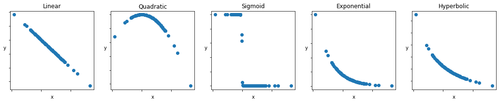
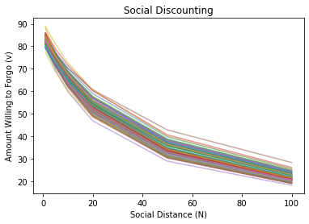
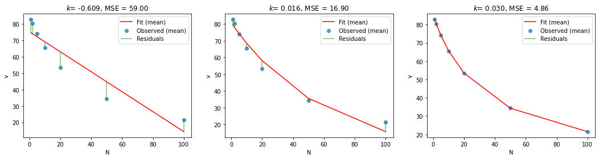
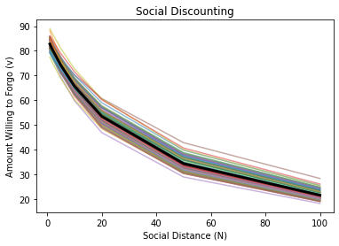
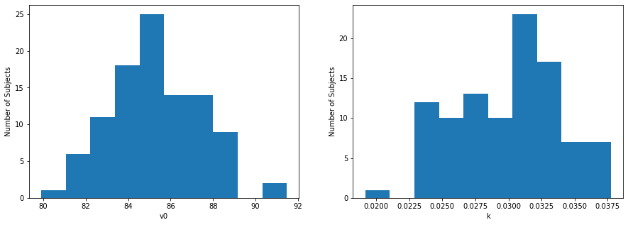
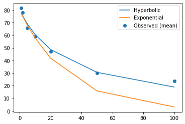
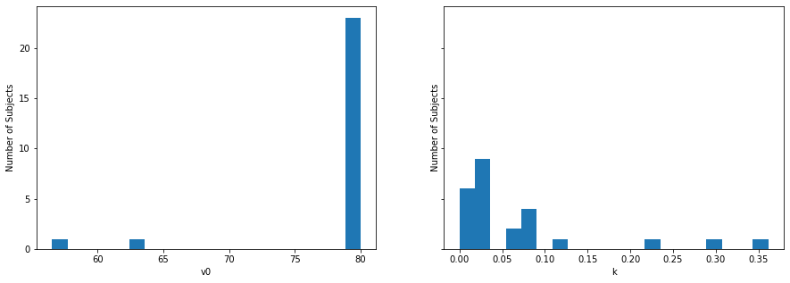

Contents
from scipy.optimize import minimize
from scipy import stats
import numpy as np, pandas as pd
import requests
import matplotlib.pyplot as plt
%matplotlib inline
# Let's plot some of these examples:
np.random.seed(2021)
b0 = 1
b1 = .04
b2 = 1.5
b3 = .0125
b4 = 2.67
x1 = np.random.normal(10, 20,
size=(100,1))
noise = np.random.randn(100).reshape((100,1))
y = {'Linear': (b0 - b1*x1).reshape((100,1)),
'Quadratic': (b0 + b1*x1 - b2*(x1**2)).reshape((100,1)),
'Sigmoid': ( ( 1 / (1 + np.exp(b2 + b4*x1)) )).reshape((100,1)),
'Exponential': (80*np.exp(-b1*x1)).reshape((100,1)),
'Hyperbolic': ((80/(1 + b3*x1))).reshape((100,1))}
fig, axes = plt.subplots(ncols=5, figsize=(18, 3))
for (key, values), ax in zip(y.items(), axes):
# True data
ax.scatter(x1, values) # our data scatter plot
ax.set(title= fr'{key}')
ax.set_xticklabels('')
ax.set_yticklabels('')
ax.set_xlabel('x')
ax.set_ylabel('y', rotation=0)
plt.show()

np.random.seed(2021)
v0 = np.random.normal(85, 2,
size=(100,))
k = np.random.normal(.03, .005,
size=(100,))
N = np.array([1,2,5,10,20,50,100])
v = []
for i in range(100):
v.append((v0[i] / (1 + k[i]*N)) + noise[i])
plt.plot(N, v[i], alpha=.5)
plt.title('Social Discounting')
plt.ylabel('Amount Willing to Forgo (v)')
plt.xlabel('Social Distance (N)')
plt.show()

def mse_linear(params, N, v):
v0, k = params
v_fit = v0 + k*N
mse = np.mean((v - v_fit)**2)
return mse
def mse_exponential(params, N, v):
v0, k = params
v_fit = v0*np.exp(-k*N)
mse = np.mean((v - v_fit)**2)
return mse
def mse_hyperbolic(params, N, v):
v0, k = params
v_fit = (v0 / (1 + k*N))
mse = np.mean((v - v_fit)**2)
return mse
# initialize dictionary to store results
results = {"lin": [],
"exp": [],
"hyp": []}
# minimize MSE for linear function using scipy.optimize.minimize
results["lin"] = minimize(mse_linear, # objective function
(85, -.3), # estimated starting points
args=(N, v), # arguments
bounds=((50,100),(-1,1)),
tol=1e-3)
# minimize MSE for hyperbolic function using scipy.optimize.minimize
results["exp"] = minimize(mse_exponential, # objective function
(92, .6), # estimated starting points
args=(N, v), # arguments
bounds=((50,100),(0,1)),
tol=1e-3)
# minimize MSE for hyperbolic function using scipy.optimize.minimize
results["hyp"] = minimize(mse_hyperbolic, # objective function
(70, .05), # estimated starting points
args=(N, v), # arguments
bounds=((50,100),(0,1)),
tol=1e-3)
print(f'Linear: v0 = {results["lin"].x[0]:.2f}, k = {results["lin"].x[1]:.3f}, MSE = {results["lin"].fun:.2f}')
print(f'Exponential: v0 = {results["exp"].x[0]:.2f}, k = {results["exp"].x[1]:.3f}, MSE = {results["exp"].fun:.2f}')
print(f'Hyperbolic: v0 = {results["hyp"].x[0]:.2f}, k = {results["hyp"].x[1]:.3f}, MSE = {results["hyp"].fun:.2f}')
Linear: v0 = 75.27, k = -0.609, MSE = 59.00
Exponential: v0 = 80.75, k = 0.016, MSE = 16.90
Hyperbolic: v0 = 85.20, k = 0.030, MSE = 4.86
fig, axes = plt.subplots(ncols=3, figsize=(18, 4))
for (model, fits), ax in zip(results.items(), axes):
# True data
v_mean = np.mean(v, axis=0)
ax.scatter(N, v_mean,
alpha = .75,
label = 'Observed (mean)') # our data scatter plot
v0, k = fits.x
mse_val = fits.fun
# Compute and plot predictions
if model == "lin":
v_hat = v0 + k * N
elif model == "exp":
v_hat = v0*np.exp(-k*N)
elif model == "hyp":
v_hat = v0 / (1 + k*N)
ax.plot(N, v_hat, color='r', label='Fit (mean)') # our estimated model
# plot residuals
vmin = np.minimum(v_mean, v_hat)
vmax = np.maximum(v_mean, v_hat)
ax.vlines(N, vmin, vmax, 'g', alpha=0.5, label='Residuals')
ax.set(
title= fr'$k$= {k:.3f}, MSE = {mse_val:.2f}',
xlabel='N',
ylabel='v')
axes[0].legend()
axes[1].legend()
axes[2].legend()
plt.show()

# plot all individual subjects
for v_subj in v:
plt.plot(N, v_subj, alpha=.5)
# plot mean model fit
v_hat = results["hyp"].x[0] / (1 + results["hyp"].x[1]*N)
plt.plot(N, v_hat,
color='black',
linewidth=3,
label='Fit (mean)') # our estimated model
plt.title('Social Discounting')
plt.ylabel('Amount Willing to Forgo (v)')
plt.xlabel('Social Distance (N)')
plt.show()

# See small differences between fitted and observed values
print(f'{v_hat} -- Fits')
print(f'{v_mean} -- Observed')
[82.74082911 80.42375605 74.19083835 65.70397111 53.47069094 34.30767545
21.47846286] -- Fits
[82.80278641 80.45272539 74.15481504 65.62721642 53.40723605 34.34937097
21.58152985] -- Observed
# initialize a DataFrame, with columns corresponding to params ['v0', k] and rows corresponding to subjects
res_df = pd.DataFrame(columns=['v0', 'k'])
for subj_id, subj_v in enumerate(v):
# minimize MSE for hyperbolic function using scipy.optimize.minimize
fit = minimize(mse_hyperbolic, # objective function
(85, .05), # estimated starting points
args=(N, subj_v), # arguments
bounds=((50,100),(0,1)),
tol=1e-3)
res_df.loc[subj_id, 'v0'] = fit.x[0]
res_df.loc[subj_id, 'k'] = fit.x[1]
res_df.loc[subj_id, 'MSE'] = fit.fun
print(f'subject {subj_id}: v0 = {fit.x[0]:.2f}, k = {fit.x[1]:.3f}, MSE = {fit.fun:.2f}')
subject 0: v0 = 87.34, k = 0.027, MSE = 0.01
subject 1: v0 = 86.74, k = 0.032, MSE = 0.00
subject 2: v0 = 85.18, k = 0.035, MSE = 0.04
subject 3: v0 = 83.00, k = 0.028, MSE = 0.00
subject 4: v0 = 86.56, k = 0.032, MSE = 0.01
subject 5: v0 = 84.06, k = 0.032, MSE = 0.01
subject 6: v0 = 86.89, k = 0.028, MSE = 0.00
subject 7: v0 = 86.93, k = 0.033, MSE = 0.01
subject 8: v0 = 85.61, k = 0.032, MSE = 0.01
subject 9: v0 = 85.08, k = 0.026, MSE = 0.01
subject 10: v0 = 84.65, k = 0.027, MSE = 0.01
subject 11: v0 = 83.70, k = 0.032, MSE = 0.00
subject 12: v0 = 85.19, k = 0.027, MSE = 0.01
subject 13: v0 = 83.93, k = 0.024, MSE = 0.03
subject 14: v0 = 82.90, k = 0.038, MSE = 0.14
subject 15: v0 = 87.24, k = 0.030, MSE = 0.00
subject 16: v0 = 82.73, k = 0.033, MSE = 0.01
subject 17: v0 = 83.61, k = 0.025, MSE = 0.02
subject 18: v0 = 82.53, k = 0.031, MSE = 0.00
subject 19: v0 = 85.92, k = 0.031, MSE = 0.00
subject 20: v0 = 83.91, k = 0.032, MSE = 0.00
subject 21: v0 = 91.07, k = 0.035, MSE = 0.04
subject 22: v0 = 88.52, k = 0.034, MSE = 0.03
subject 23: v0 = 85.38, k = 0.031, MSE = 0.00
subject 24: v0 = 85.26, k = 0.034, MSE = 0.02
subject 25: v0 = 85.56, k = 0.031, MSE = 0.00
subject 26: v0 = 88.74, k = 0.037, MSE = 0.09
subject 27: v0 = 86.92, k = 0.026, MSE = 0.01
subject 28: v0 = 83.56, k = 0.028, MSE = 0.01
subject 29: v0 = 86.26, k = 0.031, MSE = 0.00
subject 30: v0 = 88.35, k = 0.032, MSE = 0.01
subject 31: v0 = 87.59, k = 0.028, MSE = 0.00
subject 32: v0 = 87.90, k = 0.037, MSE = 0.09
subject 33: v0 = 84.37, k = 0.031, MSE = 0.00
subject 34: v0 = 85.88, k = 0.032, MSE = 0.00
subject 35: v0 = 85.53, k = 0.032, MSE = 0.01
subject 36: v0 = 83.40, k = 0.032, MSE = 0.01
subject 37: v0 = 86.35, k = 0.037, MSE = 0.11
subject 38: v0 = 79.91, k = 0.032, MSE = 0.01
subject 39: v0 = 85.62, k = 0.029, MSE = 0.00
subject 40: v0 = 85.60, k = 0.031, MSE = 0.00
subject 41: v0 = 86.42, k = 0.032, MSE = 0.01
subject 42: v0 = 84.90, k = 0.027, MSE = 0.01
subject 43: v0 = 87.15, k = 0.032, MSE = 0.00
subject 44: v0 = 81.64, k = 0.027, MSE = 0.01
subject 45: v0 = 87.58, k = 0.031, MSE = 0.00
subject 46: v0 = 82.66, k = 0.024, MSE = 0.02
subject 47: v0 = 88.35, k = 0.037, MSE = 0.11
subject 48: v0 = 83.87, k = 0.034, MSE = 0.03
subject 49: v0 = 83.54, k = 0.029, MSE = 0.00
subject 50: v0 = 87.04, k = 0.032, MSE = 0.00
subject 51: v0 = 82.67, k = 0.031, MSE = 0.00
subject 52: v0 = 83.27, k = 0.025, MSE = 0.02
subject 53: v0 = 84.08, k = 0.036, MSE = 0.07
subject 54: v0 = 87.91, k = 0.035, MSE = 0.04
subject 55: v0 = 83.63, k = 0.019, MSE = 0.04
subject 56: v0 = 83.40, k = 0.023, MSE = 0.03
subject 57: v0 = 84.98, k = 0.036, MSE = 0.08
subject 58: v0 = 88.32, k = 0.034, MSE = 0.03
subject 59: v0 = 82.08, k = 0.025, MSE = 0.02
subject 60: v0 = 86.55, k = 0.024, MSE = 0.03
subject 61: v0 = 85.16, k = 0.032, MSE = 0.01
subject 62: v0 = 85.18, k = 0.024, MSE = 0.02
subject 63: v0 = 86.37, k = 0.030, MSE = 0.00
subject 64: v0 = 85.07, k = 0.029, MSE = 0.00
subject 65: v0 = 84.85, k = 0.035, MSE = 0.06
subject 66: v0 = 84.30, k = 0.033, MSE = 0.01
subject 67: v0 = 88.06, k = 0.036, MSE = 0.08
subject 68: v0 = 87.70, k = 0.033, MSE = 0.02
subject 69: v0 = 84.96, k = 0.033, MSE = 0.02
subject 70: v0 = 86.41, k = 0.026, MSE = 0.01
subject 71: v0 = 85.45, k = 0.024, MSE = 0.02
subject 72: v0 = 81.49, k = 0.030, MSE = 0.00
subject 73: v0 = 83.34, k = 0.030, MSE = 0.00
subject 74: v0 = 82.40, k = 0.031, MSE = 0.00
subject 75: v0 = 83.74, k = 0.032, MSE = 0.00
subject 76: v0 = 86.06, k = 0.027, MSE = 0.01
subject 77: v0 = 88.30, k = 0.029, MSE = 0.00
subject 78: v0 = 85.50, k = 0.033, MSE = 0.02
subject 79: v0 = 84.61, k = 0.024, MSE = 0.02
subject 80: v0 = 85.92, k = 0.033, MSE = 0.01
subject 81: v0 = 84.83, k = 0.030, MSE = 0.00
subject 82: v0 = 83.61, k = 0.028, MSE = 0.00
subject 83: v0 = 87.29, k = 0.032, MSE = 0.01
subject 84: v0 = 84.32, k = 0.024, MSE = 0.02
subject 85: v0 = 88.26, k = 0.033, MSE = 0.02
subject 86: v0 = 86.83, k = 0.033, MSE = 0.01
subject 87: v0 = 84.54, k = 0.024, MSE = 0.02
subject 88: v0 = 91.47, k = 0.026, MSE = 0.01
subject 89: v0 = 81.25, k = 0.023, MSE = 0.03
subject 90: v0 = 81.40, k = 0.025, MSE = 0.02
subject 91: v0 = 87.81, k = 0.031, MSE = 0.00
subject 92: v0 = 82.99, k = 0.027, MSE = 0.01
subject 93: v0 = 88.16, k = 0.023, MSE = 0.03
subject 94: v0 = 81.63, k = 0.023, MSE = 0.03
subject 95: v0 = 83.84, k = 0.026, MSE = 0.02
subject 96: v0 = 84.69, k = 0.033, MSE = 0.01
subject 97: v0 = 85.31, k = 0.027, MSE = 0.01
subject 98: v0 = 85.96, k = 0.027, MSE = 0.01
subject 99: v0 = 82.42, k = 0.027, MSE = 0.01
fig, axes = plt.subplots(ncols=2, figsize=(15,5))
axes[0].hist(res_df['v0'], bins=10)
axes[0].set(ylabel="Number of Subjects", xlabel="v0")
axes[1].hist(res_df['k'], bins=10)
axes[1].set(ylabel="Number of Subjects", xlabel="k")
plt.show()

def calculate_bic(sample_size, mse, num_params):
bic = -2 * np.log(mse) + num_params * np.log(sample_size)
return bic
# calculate the Bayesian Information Criterion (bic)
for key, output in results.items():
bic = calculate_bic(len(v_mean), output.fun, 2)
print(f'{key} (BIC): {bic:.3f}')
lin (BIC): -4.263
exp (BIC): -1.763
hyp (BIC): 0.730
# First let's load in the data
# here, we are just going to download data from the web (no need to edit these lines, but try to figure out what they are doing)
url = 'https://raw.githubusercontent.com/shawnrhoads/gu-psyc-347/master/docs/static/data/Vekaria-et-al-2017_data.csv'
df = pd.read_csv(url, index_col='subject')
print(df.head())
1 2 5 10 20 50 100
subject
102 85 85 85 85 85 65 85
106 85 85 -5 5 5 5 5
107 85 85 85 85 85 5 5
113 85 55 65 55 25 15 5
114 65 55 45 55 45 15 15
vekaria_data = df.values
print(vekaria_data.shape)
(25, 7)
fit1 = minimize(mse_hyperbolic, # objective function
(85, .05), # estimated starting points
args=(N, df.iloc[:,0:7].values), # arguments
bounds=((0,80),(0,1)),
tol=1e-3)
# minimize MSE for exponential function using scipy.optimize.minimize
fit2 = minimize(mse_exponential, # objective function
(85, .05), # estimated starting points
args=(N, df.iloc[:,0:7].values), # arguments
bounds=((0,80),(0,1)),
tol=1e-3)
# fig, axes = plt.subplots()
fig = plt.figure()
plt.scatter(N, np.mean(df.iloc[:,0:7].values, axis=0), label='Observed (mean)')
plt.plot(N, fit1.x[0] / (1 + fit1.x[1]*N), label='Hyperbolic')
plt.plot(N, fit2.x[0] * np.exp(-fit1.x[1]*N), label='Exponential')
plt.legend()
plt.show()

# calculate the Bayesian Information Criterion (bic)
for label, output in zip(['hyperbolic', 'exponential'], [fit1, fit2]):
bic = calculate_bic(len(vekaria_data), output.fun, 2)
print(f'{label} (BIC): {bic:.3f}')
hyperbolic (BIC): -6.567
exponential (BIC): -6.668
# initialize a DataFrame, with columns corresponding to params ['v0', k] and rows corresponding to subjects
res_vekaria = pd.DataFrame(columns=['v0', 'k'])
for subj_id, subj_v in zip(df.index, vekaria_data):
# minimize MSE for hyperbolic function using scipy.optimize.minimize
fit = minimize(mse_hyperbolic, # objective function
(85, .05), # estimated starting points
args=(N, subj_v), # arguments
bounds=((0,80),(0,1)),
tol=1e-3)
res_vekaria.loc[subj_id, 'v0'] = fit.x[0]
res_vekaria.loc[subj_id, 'k'] = fit.x[1]
res_vekaria.loc[subj_id, 'MSE'] = fit.fun
print(f'subject {subj_id}: v0 = {fit.x[0]:.2f}, k = {fit.x[1]:.3f}, MSE = {fit.fun:.2f}')
subject 102: v0 = 80.00, k = 0.000, MSE = 53.53
subject 106: v0 = 80.00, k = 0.301, MSE = 488.09
subject 107: v0 = 80.00, k = 0.024, MSE = 430.10
subject 113: v0 = 79.88, k = 0.074, MSE = 75.61
subject 114: v0 = 62.64, k = 0.033, MSE = 42.86
subject 116: v0 = 80.00, k = 0.000, MSE = 25.00
subject 119: v0 = 80.00, k = 0.021, MSE = 370.64
subject 120: v0 = 79.94, k = 0.087, MSE = 224.61
subject 121: v0 = 80.00, k = 0.000, MSE = 25.00
subject 122: v0 = 80.00, k = 0.003, MSE = 62.99
subject 123: v0 = 79.62, k = 0.110, MSE = 358.13
subject 124: v0 = 79.97, k = 0.062, MSE = 55.33
subject 125: v0 = 80.00, k = 0.019, MSE = 294.43
subject 126: v0 = 80.00, k = 0.006, MSE = 820.72
subject 127: v0 = 80.00, k = 0.030, MSE = 138.29
subject 128: v0 = 80.00, k = 0.000, MSE = 25.00
subject 132: v0 = 80.00, k = 0.024, MSE = 196.97
subject 135: v0 = 80.00, k = 0.056, MSE = 503.05
subject 136: v0 = 79.98, k = 0.089, MSE = 271.09
subject 137: v0 = 80.00, k = 0.021, MSE = 351.20
subject 138: v0 = 80.00, k = 0.024, MSE = 149.32
subject 139: v0 = 80.00, k = 0.220, MSE = 273.89
subject 141: v0 = 79.93, k = 0.083, MSE = 135.05
subject 143: v0 = 56.54, k = 0.036, MSE = 16.84
subject 147: v0 = 80.00, k = 0.361, MSE = 178.55
for subj_id, subj_v in zip(df.index, vekaria_data):
if all(x==subj_v[0] for x in subj_v):
print(f'no variation for subject #{subj_id}, {subj_v}')
no variation for subject #116, [85 85 85 85 85 85 85]
no variation for subject #121, [85 85 85 85 85 85 85]
no variation for subject #128, [85 85 85 85 85 85 85]
# initialize a DataFrame, with columns corresponding to params ['v0', k] and rows corresponding to subjects
hyp_vekaria = pd.DataFrame(columns=['v0', 'k'])
for subj_id, subj_v in zip(df.index, vekaria_data):
if all(x==subj_v[0] for x in subj_v):
if np.sum(subj_v)>=595:
hyp_vekaria.loc[subj_id, 'v0'] = 80 #
hyp_vekaria.loc[subj_id, 'k'] = 0
hyp_vekaria.loc[subj_id, 'MSE'] = np.nan
print(f'assigning k=0 for subject #{subj_id}, {subj_v}')
else:
# minimize MSE for hyperbolic function using scipy.optimize.minimize
fit = minimize(mse_hyperbolic, # objective function
(85, .05), # estimated starting points
args=(N, subj_v), # arguments
bounds=((0,80),(0,1)),
tol=1e-3)
hyp_vekaria.loc[subj_id, 'v0'] = fit.x[0]
hyp_vekaria.loc[subj_id, 'k'] = fit.x[1]
hyp_vekaria.loc[subj_id, 'MSE'] = fit.fun
res_vekaria = pd.concat([df, hyp_vekaria], axis=1)
assigning k=0 for subject #116, [85 85 85 85 85 85 85]
assigning k=0 for subject #121, [85 85 85 85 85 85 85]
assigning k=0 for subject #128, [85 85 85 85 85 85 85]
fig, axes = plt.subplots(ncols=2, figsize=(15,5), sharey=True)
axes[0].hist(res_vekaria['v0'], bins=20)
axes[0].set(ylabel="Number of Subjects", xlabel="v0")
axes[1].hist(res_vekaria['k'], bins=20)
axes[1].set(ylabel="Number of Subjects", xlabel="k")
plt.show()
